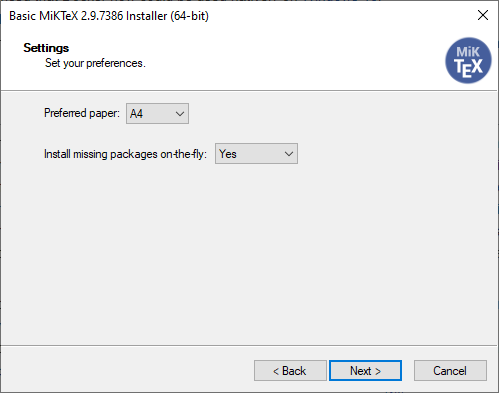

Applications
Perl
Perl is a requirement for builds via LaTeX Workshop. Perl comes with UNIX-base Operating Systems (e.g Linux and Mac OS), however it does not come preinstalled for Windows.
Visual Studio Code
Free. Built on open source. Runs everywhere.
— https://code.visualstudio.com/
A comprehensive tutorial is available here: Get Started
LaTeX Editing
Visual Studio Code supports LaTeX Editing via the following extensions:
LaTeX Workshop by James Yu
LaTeX Workshop provides Build/Compile .tex File on Save as well as:
- Code Snippets/IntelliSense
- Code Linting (e.g. highlighted errors and warnings)
LaTeX Utilities by tecosaur
LaTeX Utilities provides additional functionality to LaTeX Workshop such as: - Formatted Pastes (e.g. tabulated data from a spreadsheet into a formatted LaTeX table) - Zotero citations (e.g. cited pages)
Task Management
Todo Tree by Gruntfuggly
Todo Tree outlines the TODO comments in your LaTeX code, providing a platform for tracking the progress of the paper-writing, and making sure that you do not miss out on any details.
Source Code Management
Git Graph by mhutchie
Git Graph provides a visualization of your git repository, enabling you to track changes and revert them if necessary.
Git Source Code Management (SCM)
Git is a free and open source distributed version control system designed to handle everything from small to very large projects with speed and efficiency.
— https://git-scm.com/
Git SCM eases the collaborative editing process by synchronizing changes across connected devices.
Git SCM is naturally supported by Visual Studio Code, which makes staging changes, producing commits and fetching changes in a remote repository easy and quick, accessible with one click.
A comprehensive tutorial is available here: Pro Git by Scott Chacon and Ben Straub
MikTeX
MikTeX enables you to compile the str-templates and compile your modified versions, providing PDF output that is ready-to-print and ready-to-publish.
MikTeX ensures that you don't download thousands of bytes of packages you will never use in your lifetime.
It supports on-the-fly download and installation of packages that are used within TeX documents that you run.
To ensure that MikTeX does not bother you with install prompts every time a missing package is detected, please switch the Install missing packages on-the-fly dropdown list to Yes during the installation process, as shown here:

A comprehensive tutorial is available here: LaTeX for Beginners
Zotero
Zotero is a free, easy-to-use tool to help you collect, organize, cite, and share research.
— https://www.zotero.org/
A comprehensive tutorial for Zotero is available here: Zotero User Guide
A brief tutorial for Better BibTeX is available here: Referencing, Citing, and Structuring Bibliographies
Bibliography Management
Zotero manages all your references, including publication information as well as the digital copies and notes you have on each reference.
One-click Reference Storage
Just use the Zotero browser connector to automatically store your references from Google Scholar and other official sites. Examples are shown here on this webpage. Do note however that Zotero connector works best with Google Scholar and storing references directly from an official article-hosting site works only about 75% of the time. You may add the reference by identifier as fallback. If all else fails, you may manually add or edit your references yourself.
Online Hosting
Zotero provides online hosting to your libraries for free. You can share your online libraries with other users of the network, thus making collaboration much easier, with shared references between team members.
Browser Support
Zotero provides extensions for the most common web browsers available which makes collecting reference information quick and easy.
Citations via BibLaTeX
Zotero can produce .bib files for citations via BibLaTeX. These citations are automatically added to the bibliography of your document.
Better BibTeX by retorquere
Better BibTeX optimizes Zotero for producing .bib files, and can update the files automatically should changes be made in the library associated with them.
Optional Software
LTeX by Julian Valentin
LTeX uses LanguageTool to provide spelling and grammatical corrections as you type, saving you time for editing typographical errors. Do note however that it requires an installation of Java 8 or higher and requires other extensions for English and Tagalog Support.